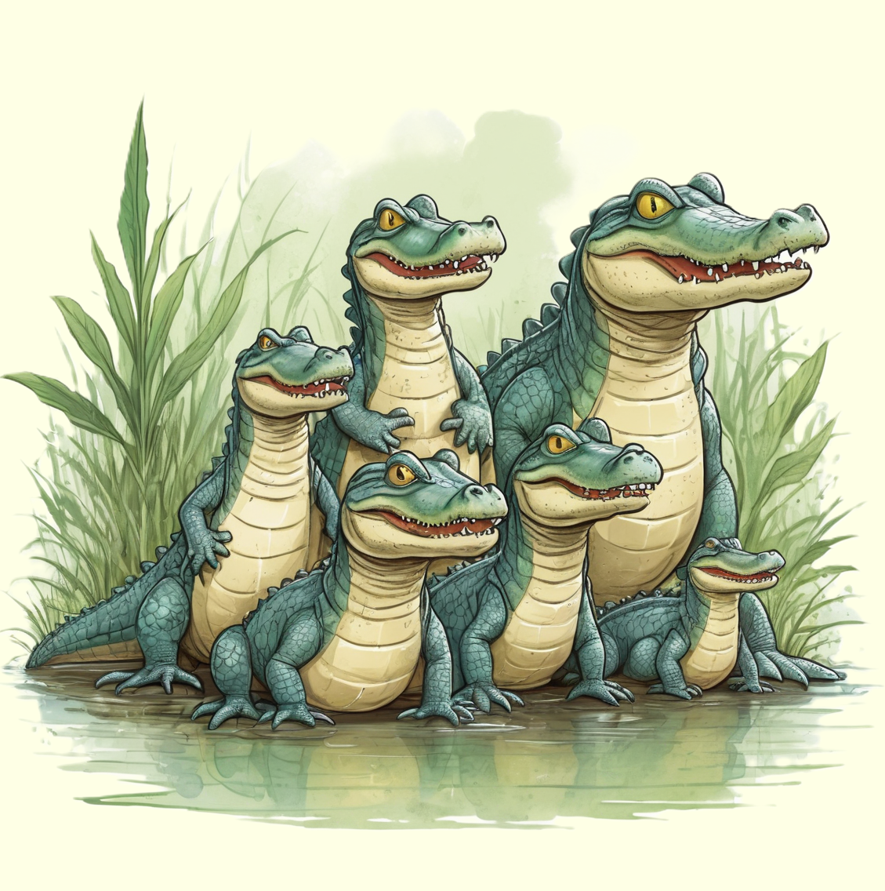

Der Alligator, ein faszinierender Bewohner von Sümpfen und Flüssen, beeindruckt mit seinem schuppenbedeckten Körper und seinen mächtigen Kiefern.
Entdecke die aufregende Welt dieses Reptils und erfahre, wie es in den Gewässern Nord- und Südamerikas lebt.

Eindrucksvolle Reptilien der Feuchtgebiete
Alligatoren sind faszinierende Reptilien, die in den Feuchtgebieten Nordamerikas beheimatet sind. Mit ihren kraftvollen Körpern, der schuppenbedeckten Haut und den scharfen Zähnen gehören sie zur Gruppe der Krokodile. Alligatoren sind exzellente Schwimmer und bewegen sich gleichermaßen geschickt an Land. Ihre Augen und Nasenlöcher befinden sich auf der Oberseite des Kopfes, sodass sie im Wasser nur knapp sichtbar sind. Diese Anpassung ermöglicht es ihnen, auf ihre Beute zu lauern, während der Rest ihres Körpers getarnt unter der Wasseroberfläche bleibt.
Alligatoren ernähren sich von Fischen, Vögeln, Schildkröten und kleinen Säugetieren. Mit ihrem beeindruckenden Kieferdruck können sie ihre Beute im Ganzen verschlingen oder sie in Stücke reißen. Alligatoren haben eine bemerkenswerte Fähigkeit, längere Zeit ohne Nahrung auszukommen und können sogar während kalter Monate inaktiv bleiben. Diese eindrucksvollen Reptilien spielen eine wichtige Rolle im ökologischen Gleichgewicht der Feuchtgebiete und faszinieren durch ihre einzigartige Anpassung an ihre Umgebung.
Gemeinschaftsleben und beeindruckende Brutpflege
Alligatoren sind nicht nur Einzelgänger, sondern können auch in Gruppen leben, vor allem während der Paarungszeit. Diese intelligenten Reptilien kommunizieren miteinander durch Laute wie Brüllen und Zischen. Alligatoren haben eine beeindruckende Brutpflege, bei der die Weibchen Nester aus Pflanzenmaterial und Schlamm bauen, um ihre Eier darin zu legen. Während der Brutzeit bewachen die Weibchen ihre Nester und sorgen dafür, dass die Eier vor Gefahren geschützt sind.
Nach dem Schlüpfen werden die jungen Alligatoren von ihrer Mutter behütet und beschützt. Dieses soziale Verhalten unterstützt das Überleben der Jungtiere in den ersten Lebensphasen. Alligatoren sind nicht nur beeindruckende Jäger, sondern auch faszinierende Eltern, die eine erstaunliche Fürsorglichkeit für ihre Nachkommen zeigen. Insgesamt sind Alligatoren faszinierende Reptilien, die durch ihre Lebensweise und ihre Rolle in den Feuchtgebieten die Neugier junger Naturforscher wecken können.